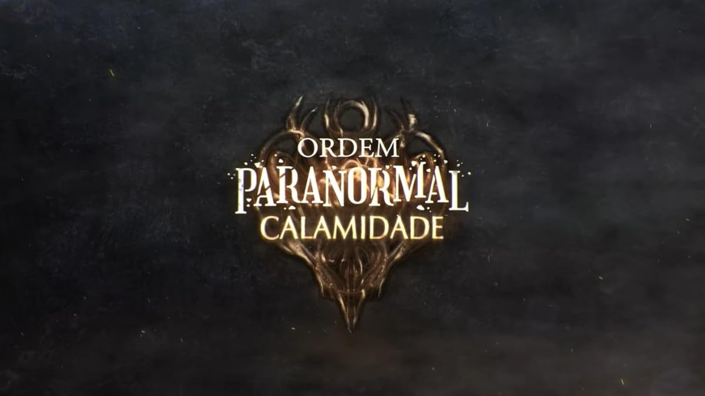
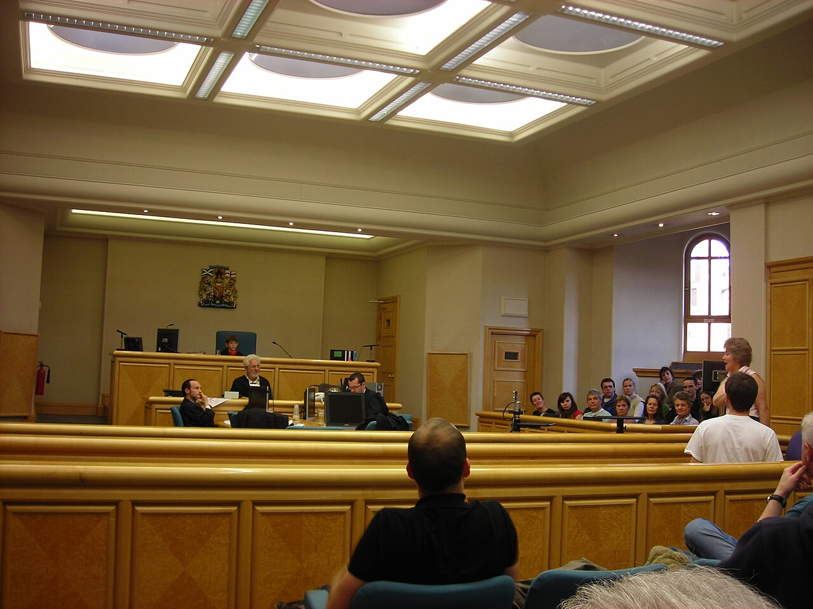
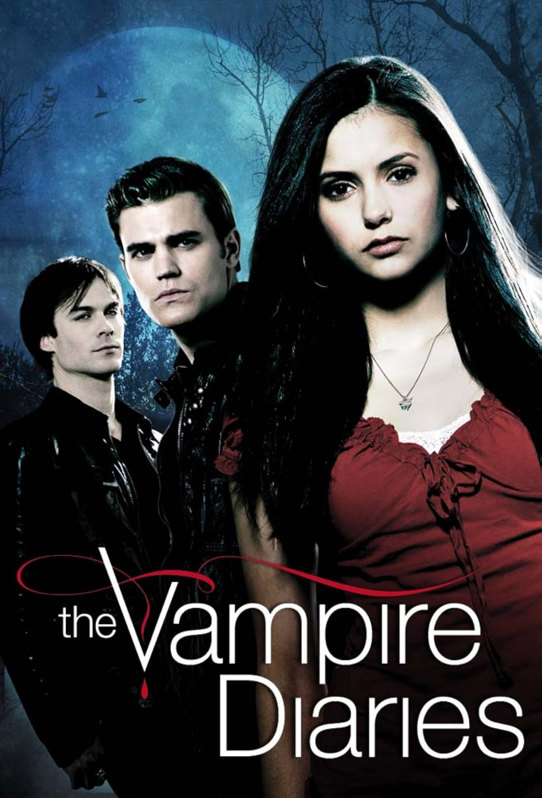
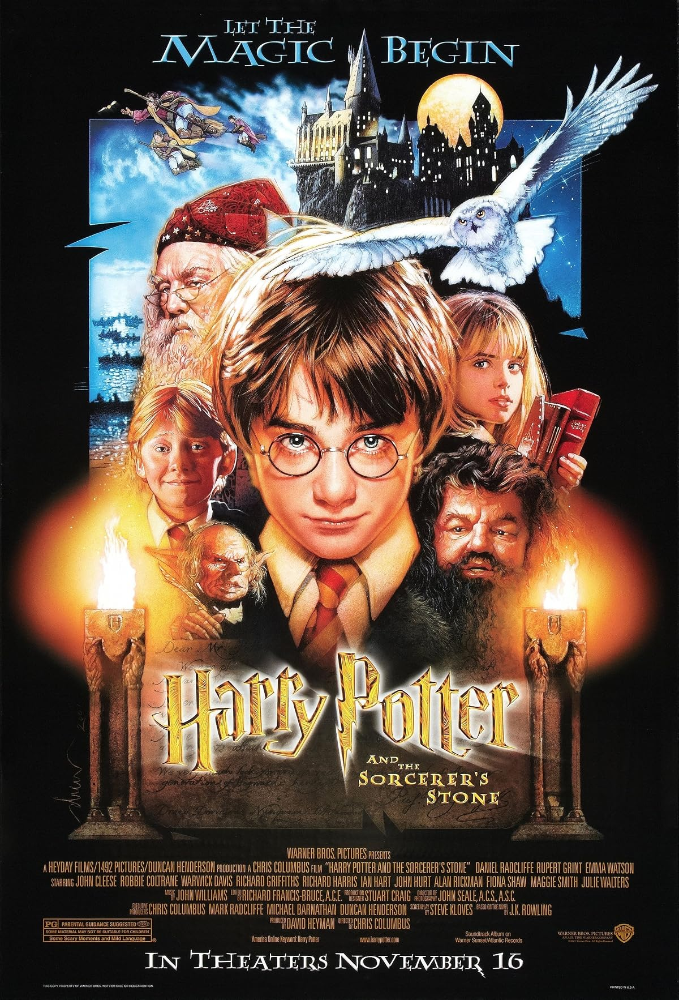
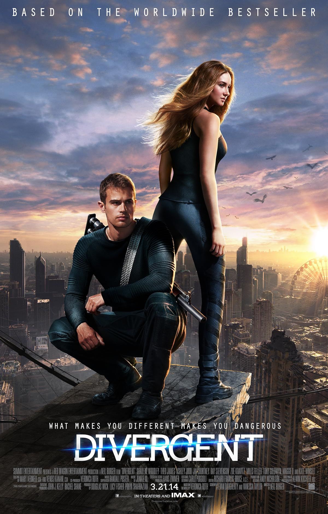
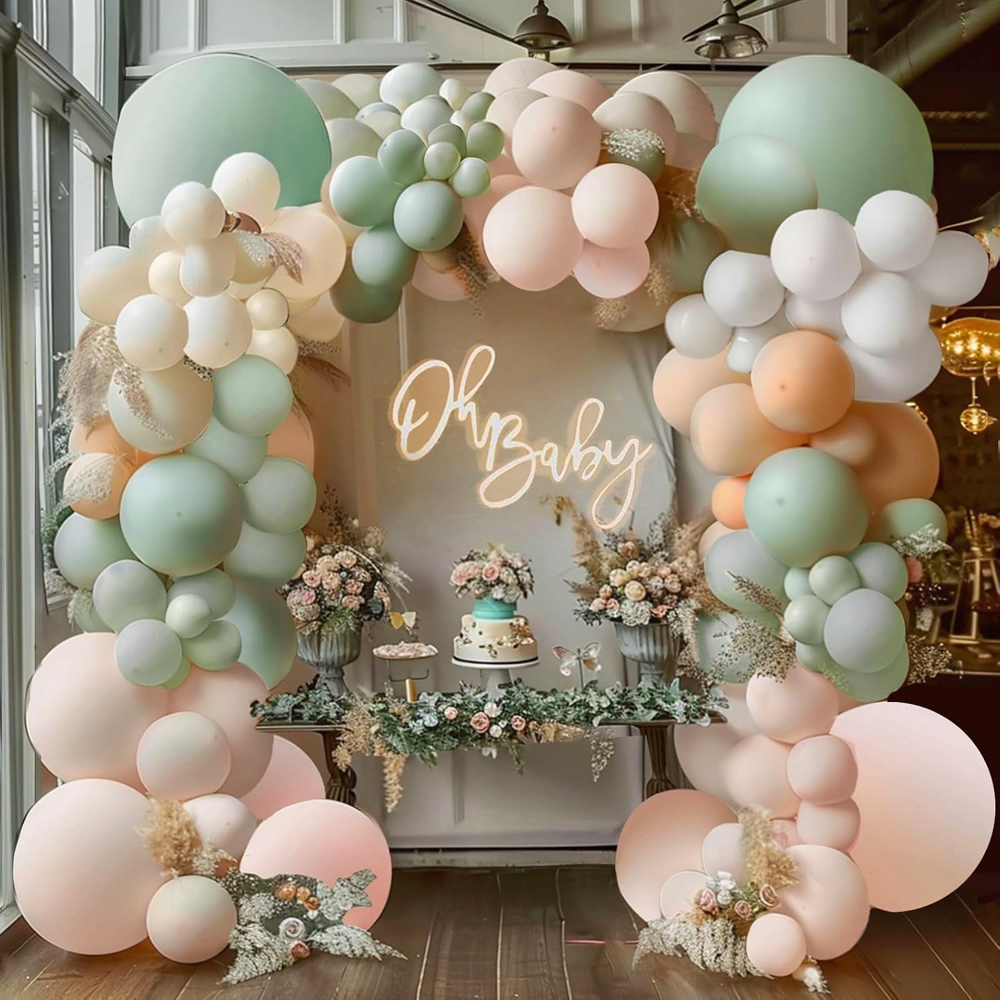
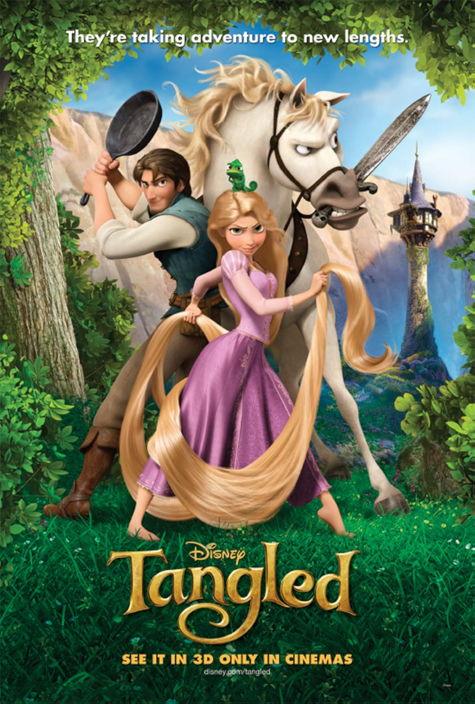
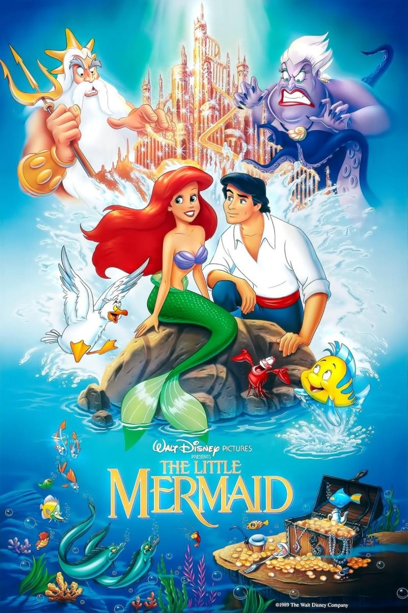
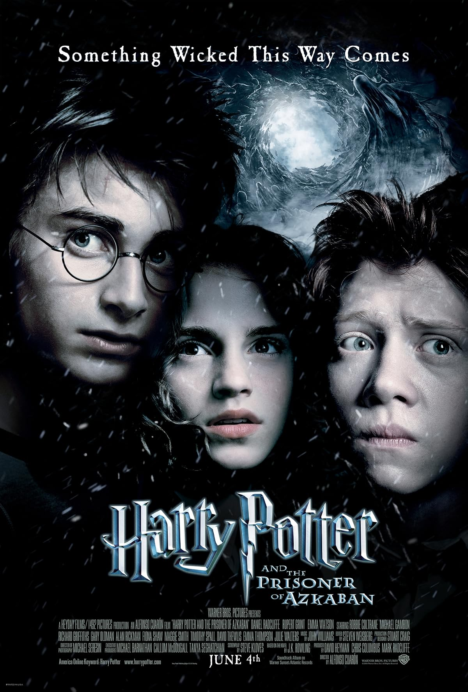

Choose Your Adventures
Teacher Alex · 14 histórias de escolhas. Clique para abrir. O progresso e os finais encontrados ficam no navegador.

Don't Read
Ordem Paranormal
Uma biblioteca e palavras que não se deve ler.
Abrir →Don't Stay
Interstellar
Campo de estrelas ao fundo, que acelera enquanto você está no planeta.
Abrir →
Don't Sign
Hale & Price · thriller jurídico original
Bloco amarelo de advogado; cláusulas e cartas aparecem como folhas datilografadas.
Abrir →
Don't Invite Him In
The Vampire Diaries
Mystic Falls à noite: névoa baixa e corvos que aumentam com o perigo.
Abrir →The Message
História original · véspera de um casamento
Bolhas de chat ao fundo, que se multiplicam conforme o segredo cresce.
Abrir →
Don't Tell Him Your Name
Hogwarts
Castelo, com imagem de abertura e fontes embutidas: funciona sem internet.
Abrir →
Don't Tell Anyone
Divergente
Telhado de Chicago à noite; brasas dos Audazes sobem atrás do texto.
Abrir →Don't Lose Anyone
História original · um dia como guia em Portugal
Azulejo, gaivotas e o Atlântico no pé da tela.
Abrir →Don't Lie
Suits
Manhattan vista de um escritório de vidro; as janelas acendem e apagam com a história.
Abrir →
Vanessa Always Wins
História original · um chá de bebê em Albuquerque
Abre como convite de festa; balões pastel ao fundo.
Abrir →Salt and Sugar
História original · Nina e a confeitaria
Branco e rosa, fonte ajustável e tipografia embutida: funciona sem internet.
Abrir →
Don't Write Your Name
Princesas da Disney · o livro misturado
Meia-noite; o livro velho de princesas está aberto no chão e você não o abriu.
Abrir →
Don't Close the Book
Princesas da Disney · elas acordaram na sua cama
Mesmo livro de princesas, ex-libris na abertura. Comédia de sábado de manhã.
Abrir →
Don't Go Out at Night
Hogwarts · os três primeiros filmes
Sala comunal à noite, velas flutuantes e pergaminho lacrado.
Abrir →